Unet LMS · Кабинет преподавателя
Как войти в систему, создать курс, добавить тему или тест и загрузить учебные материалы.
Unet LMS использует те же учётные данные, что и корпоративная система UNET. Входите тем же логином (ПИН) и паролем, которые вы используете в UNET. Если у вашей учётной записи есть несколько профилей, выберите тот же профиль, что и в UNET: для работы преподавателя это профиль Сотрудник.
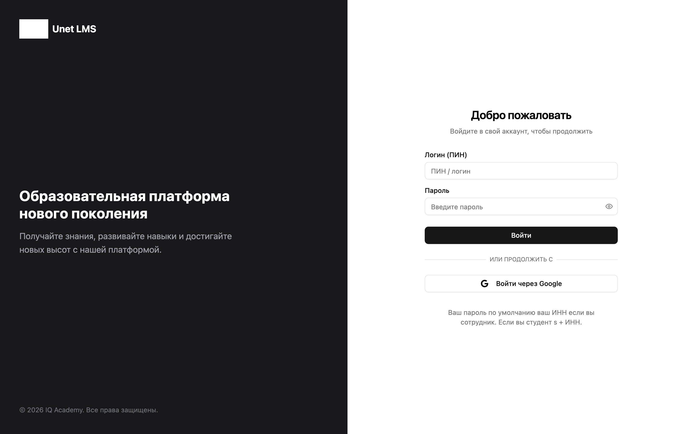
| Поле | Что вводить |
|---|---|
| Логин (ПИН) | ПИН / логин из системы UNET |
| Пароль | Пароль от UNET. По умолчанию у сотрудника это ИНН, у студента — «s» + ИНН |
Это главная страница преподавателя. Вверху меню: Мои курсы и Тестирование. Справа — поиск, уведомления и меню профиля.
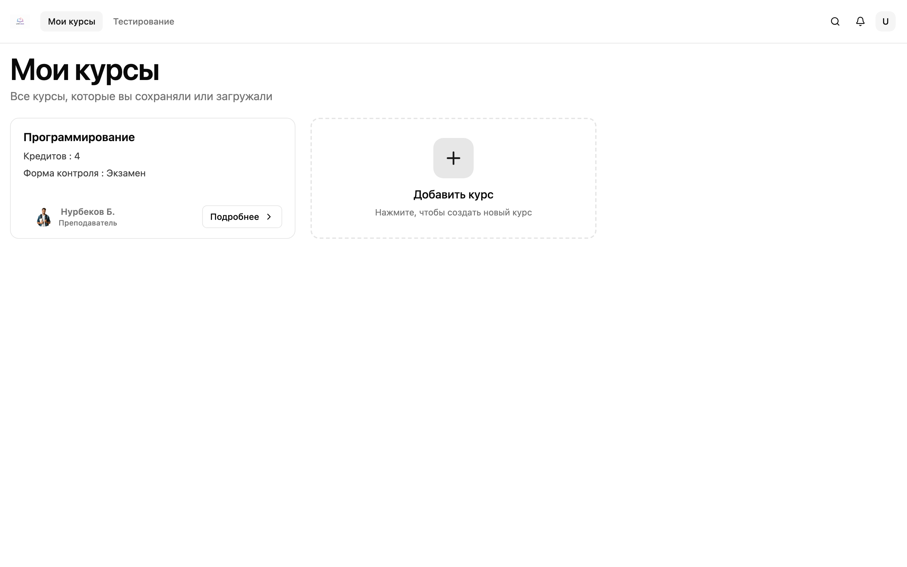
На карточке уже созданного курса отображаются:
Рядом с существующими курсами есть пунктирная карточка Добавить курс. Через неё создаётся новая дисциплина.
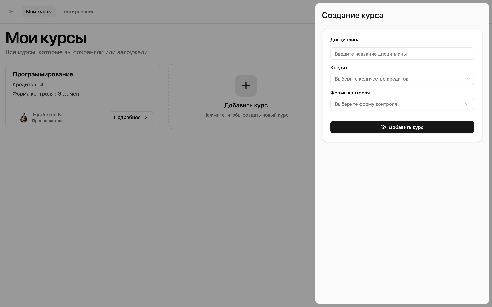
| Поле | Обязательно | Описание |
|---|---|---|
| Дисциплина | Да | Название курса, от 6 до 30 символов. Пример: «Программирование». |
| Кредит | Да | Количество кредитов: 3, 4, 5 или 6. |
| Форма контроля | Да | Итоговая форма: Экзамен, Устный, СРС, Отчет или Тестирование. |
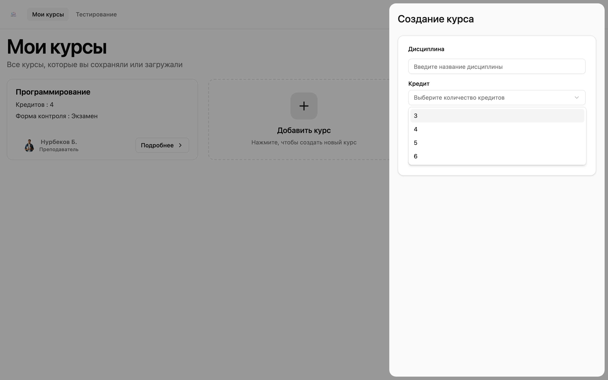
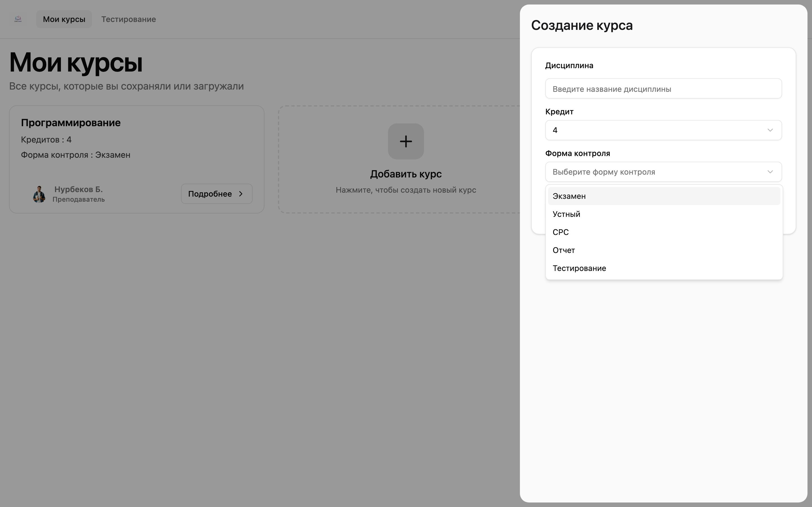
На странице курса сверху видно название дисциплины и преподавателя. Для преподавателя доступны вкладки:
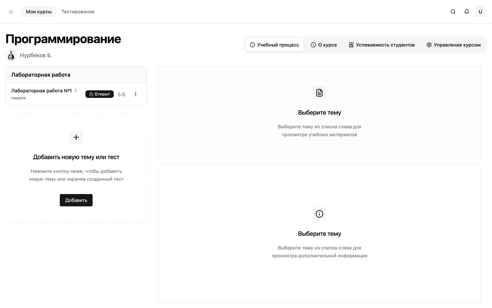
Слева — список заданий по типам (например, «Лабораторная работа»). У каждой темы видны:
Справа, пока тема не выбрана, показаны подсказки: сначала выберите тему слева, чтобы увидеть учебные материалы и дополнительную информацию.
Под списком тем находится блок Добавить новую тему или тест с кнопкой Добавить.
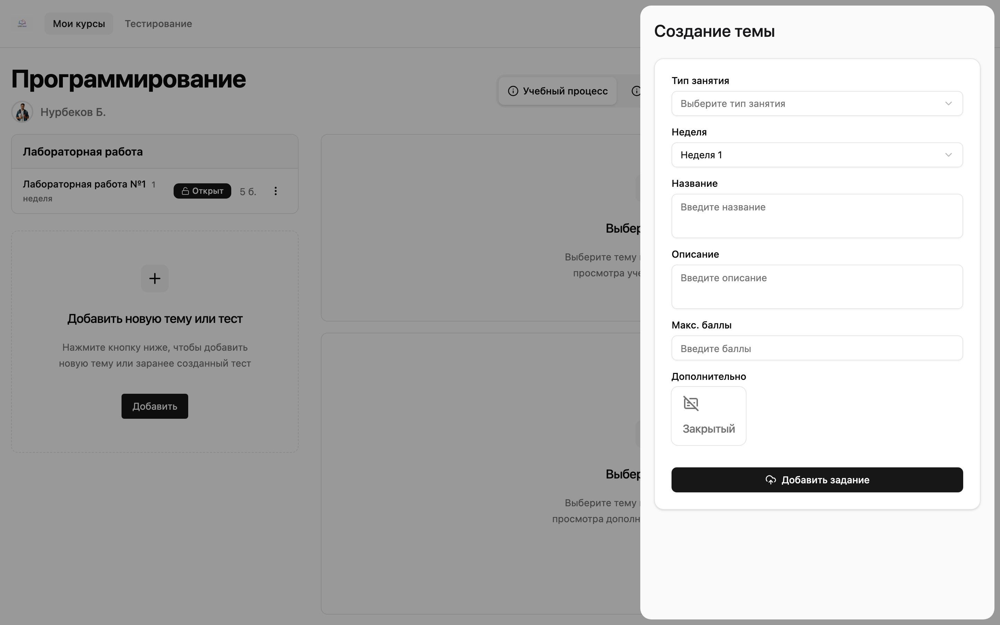
Сначала выберите Тип занятия:
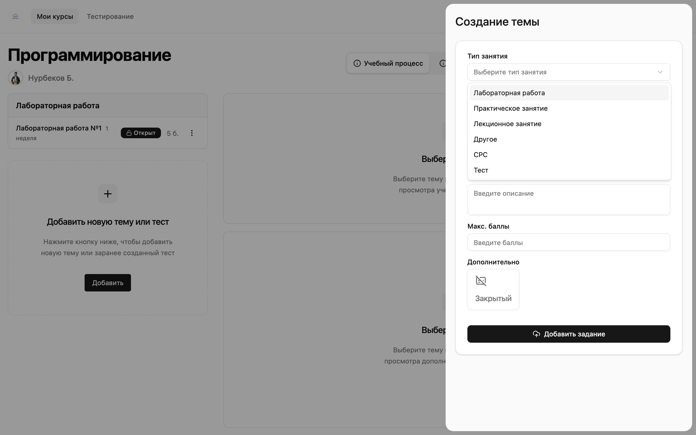
Форма показывает поля задания:
| Поле | Обязательно | Описание |
|---|---|---|
| Тип занятия | Да | Вид работы в учебном плане. |
| Неделя | Да | Неделя с 1 по 16. По умолчанию — неделя 1. |
| Название | Да | Название темы или задания. |
| Описание | Да | Краткое содержание, что должен сделать студент. |
| Макс. баллы | Да | Максимальный балл за задание. |
| Дополнительно → Закрытый | Нет | Если включено, тема по умолчанию закрыта для студентов. |
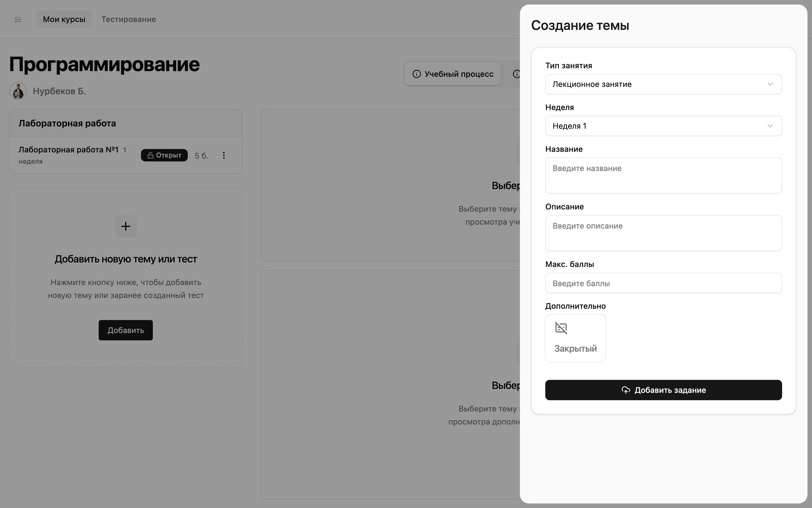
После заполнения нажмите Добавить задание.
Поля недели, названия и баллов скрываются. Нужно выбрать уже созданный тест и привязать его к курсу.
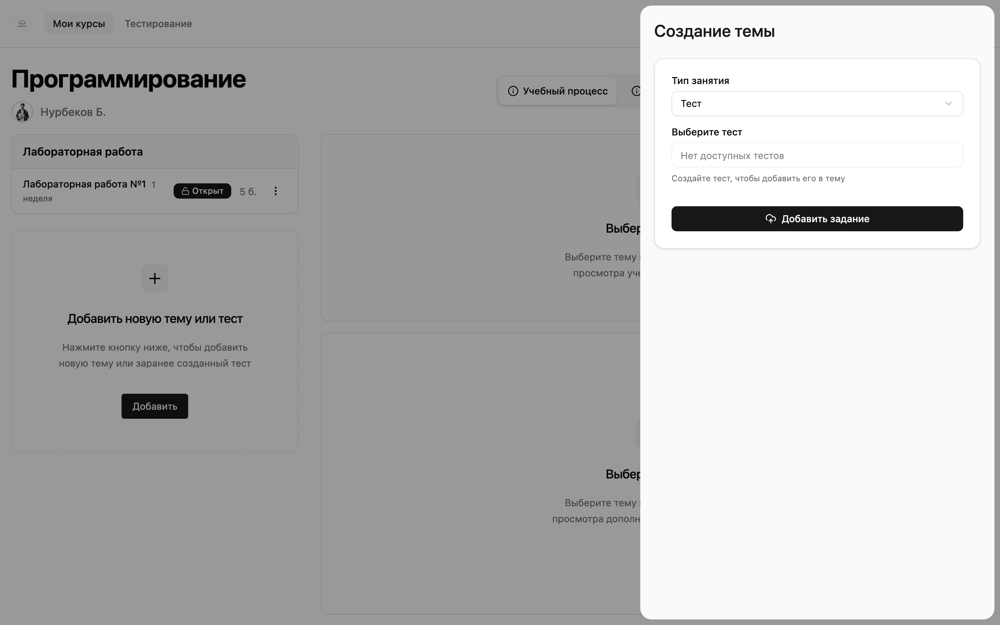
Тест создаётся отдельно, в разделе Тестирование. После этого его можно привязать к курсу (см. раздел 5).
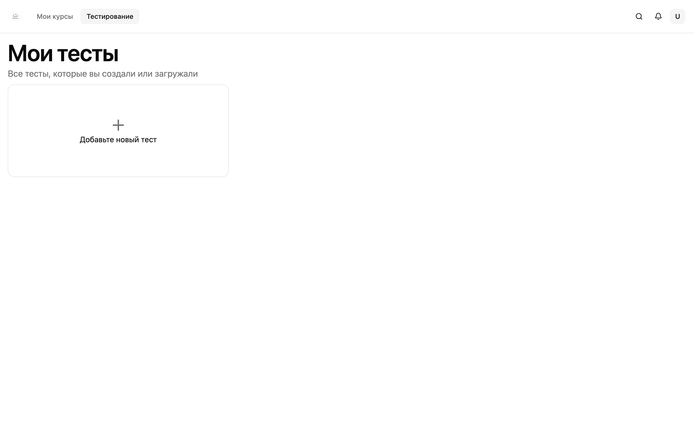
Откроется страница Создание теста по усвоению материала.
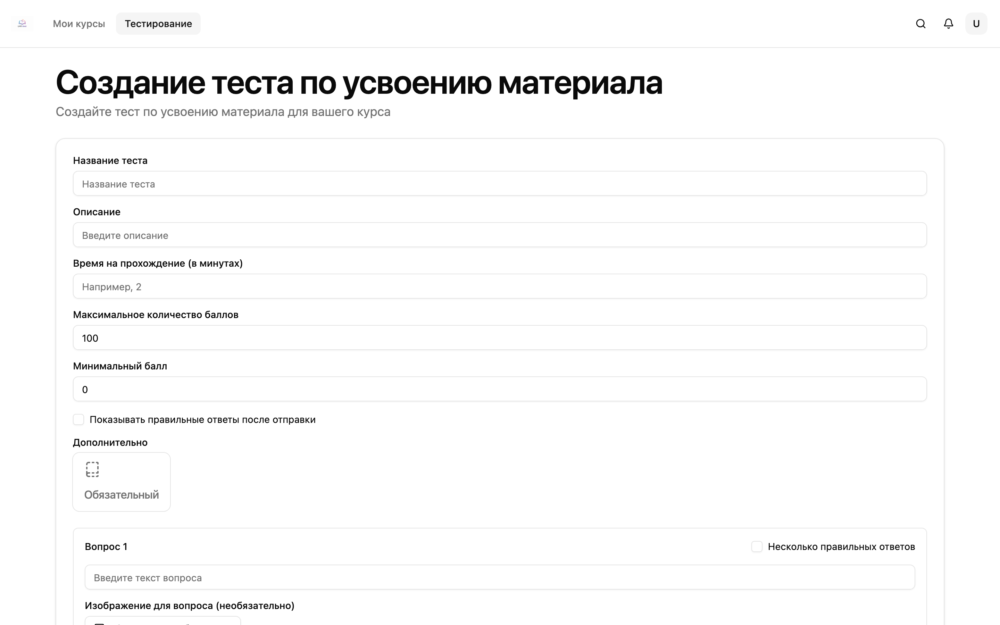
| Поле | Обязательно | Описание |
|---|---|---|
| Название теста | Да | Как тест будет отображаться студентам и в списке «Мои тесты». |
| Описание | Да | Кратко, для чего тест и что проверяется. |
| Время на прохождение (в минутах) | Да | Лимит времени. Минимум 1 минута. |
| Максимальное количество баллов | Да | По умолчанию 100. |
| Минимальный балл | Да | Порог прохождения. Не может быть больше максимума. По умолчанию 0. |
| Показывать правильные ответы после отправки | Нет | Если включено, студент увидит верные ответы после сдачи. |
| Дополнительно → Обязательный | Нет | Для выставления балла студенту нужно пройти этот тест. |
По умолчанию в форме уже есть два вопроса. Можно добавить ещё вопросы (всего до четырёх) и до шести вариантов ответа на вопрос.
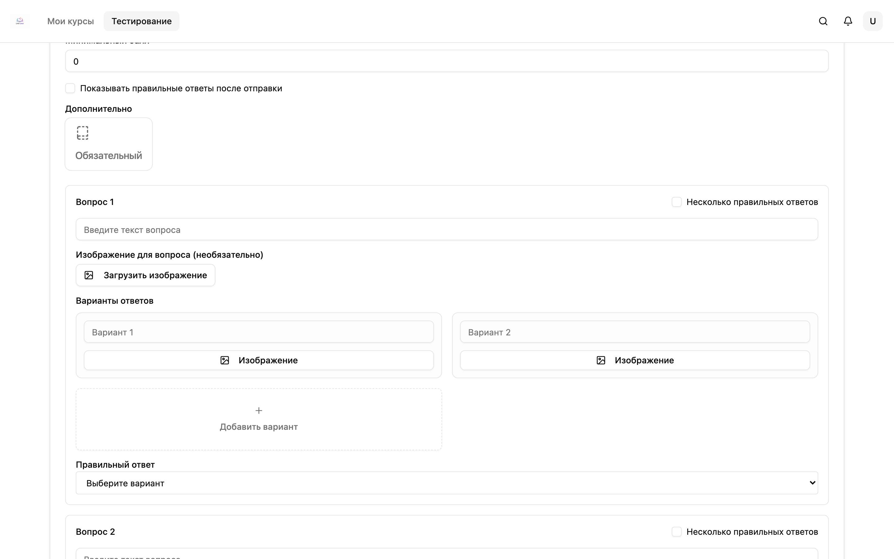
| Элемент | Как использовать |
|---|---|
| Текст вопроса | Введите формулировку вопроса. |
| Изображение для вопроса | Необязательно. Можно прикрепить рисунок, схему или формулу. |
| Несколько правильных ответов | Включите, если верных вариантов больше одного. |
| Вариант 1, Вариант 2… | Текст ответа. К варианту тоже можно добавить изображение. |
| Добавить вариант | Добавляет ещё один вариант (максимум 6). |
| Правильный ответ | Выберите верный вариант. Если включён множественный выбор — отметьте несколько. |
| Добавить вопрос | Добавляет следующий вопрос. |
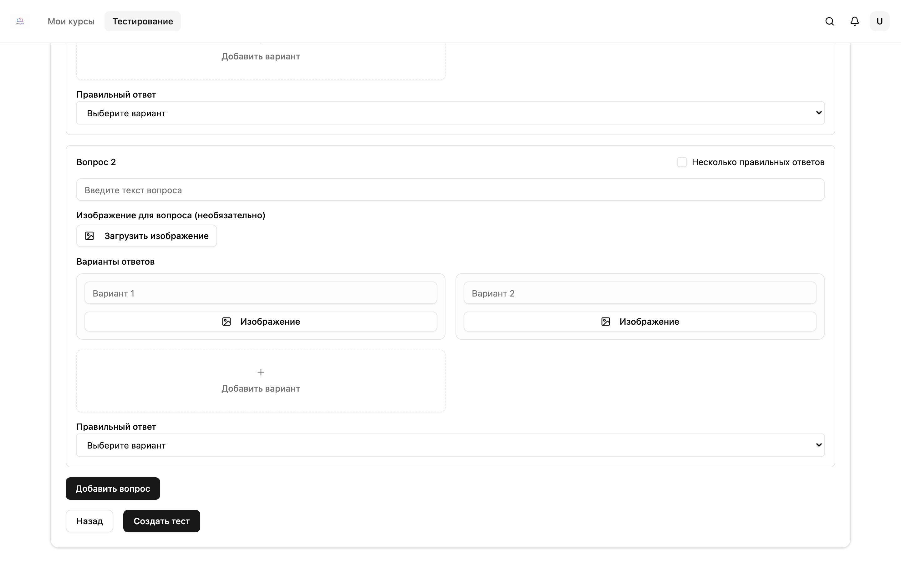
Материалы привязаны к конкретной теме. Сначала выберите тему в списке слева на вкладке «Учебный процесс». Справа появится блок Учебные материалы.
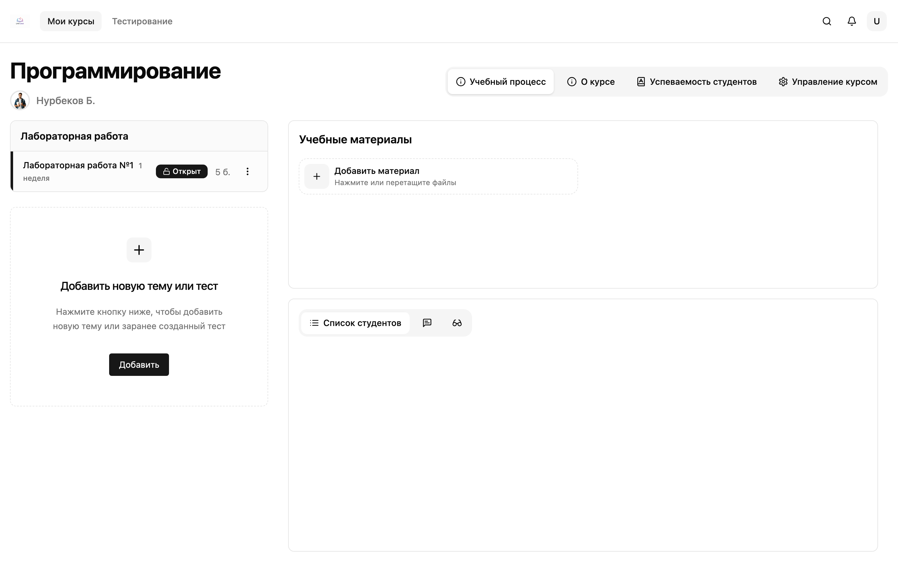
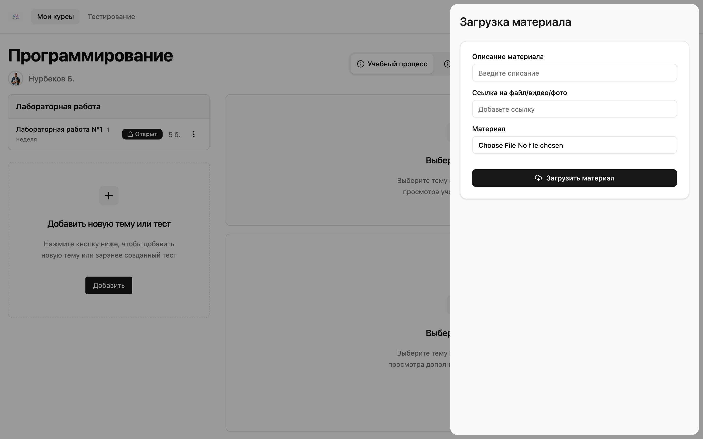
| Поле | Обязательно | Описание |
|---|---|---|
| Описание материала | Да | Как материал будет подписан для студентов. |
| Ссылка на файл/видео/фото | Нет* | Внешняя ссылка: документ, видео или изображение. |
| Материал | Нет* | Загрузка файла с компьютера. |
* Файл и ссылка взаимоисключающие: если выбран файл, поле ссылки скрывается, и наоборот. Нужно указать либо файл, либо ссылку.
Нажмите Загрузить материал. Файл или ссылка появятся в учебных материалах выбранной темы.